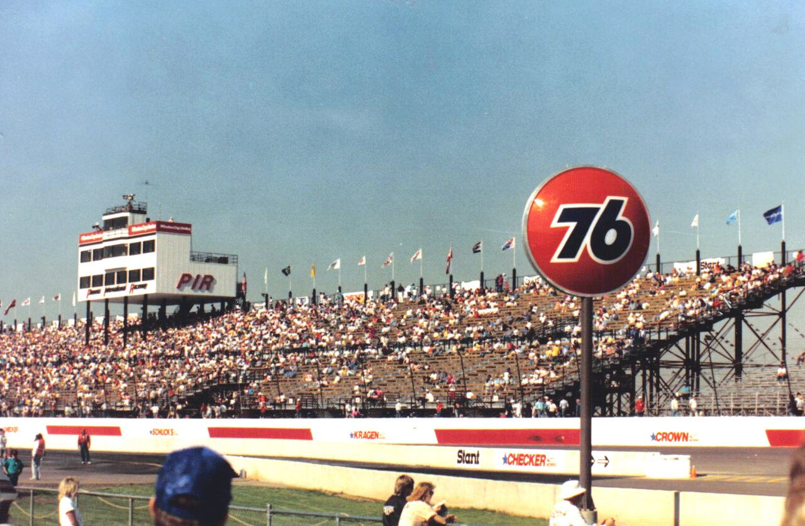
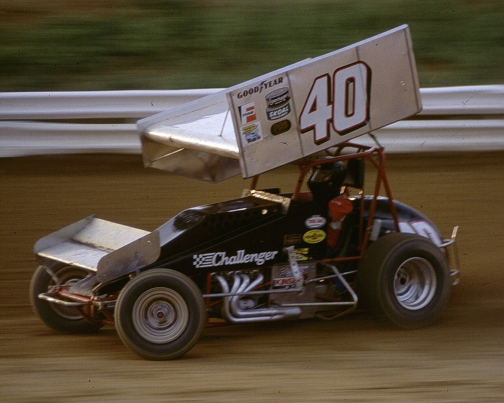
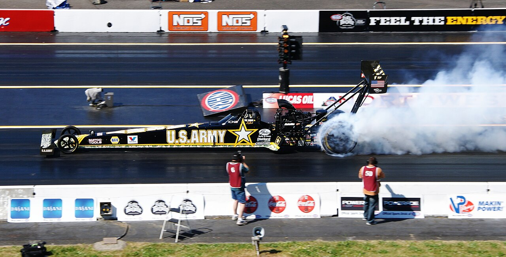
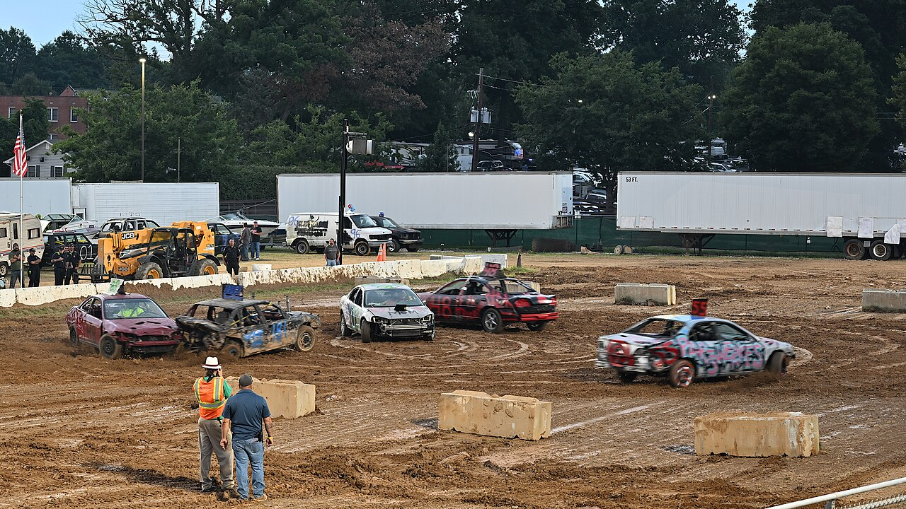

~15 min
Phoenix Raceway
One-mile tri-oval in Avondale. NASCAR's Championship Weekend lands here every November. Spring brings NASCAR, IndyCar, and ARCA back-to-back. Buy November early.
Avondale, AZSchedule →

Built into the Estrella foothills, with dirt tracks, drag strips, and demo derbies filling in the rest.
One-mile tri-oval in Avondale. NASCAR's Championship Weekend lands here every November. Spring brings NASCAR, IndyCar, and ARCA back-to-back. Buy November early.

A 1/3-mile clay oval in Peoria. Weekly sprint cars, modifieds, and stock cars throwing dirt under the lights. The real Saturday-night Arizona experience.

Quarter-mile NHRA drag strip plus road courses and drag-boat racing in Chandler. Formerly Firebird. Also runs drive-a-real-supercar days, no experience needed.

Buckeye runs spring and fall derbies (cars, trucks, even lawn mowers). The Arizona State Fair every October brings tractor pulls, mud bogs, and demo derbies to the Grandstand.